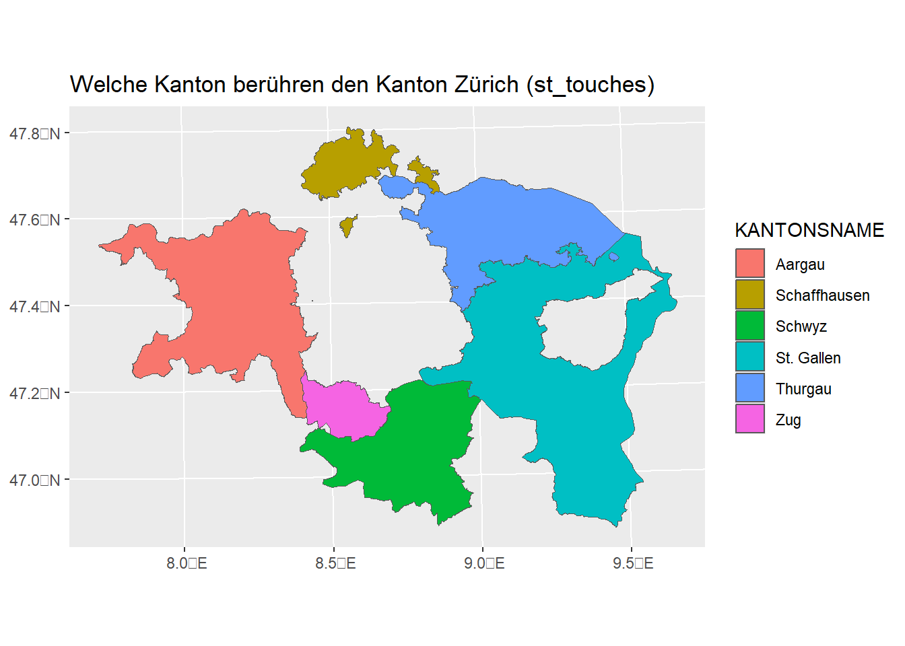

library(dplyr)
library(ggplot2)
library(sf)
# Das Geopackage beinhaltet 3 Layers (siehe st_layers("zweitwohnungsinitiative.gpkg"))
# In jedem Layer sind die Abstimmungsresultate auf eine andere politische Ebene
# aggregiert. Wir started mit der Aggregationsstufe "kanton"
zweitwohnung_kanton <- read_sf("datasets/rauman/zweitwohnungsinitiative.gpkg", "kanton")Rauman 3: Übung
Für die Berechnung von Morans \(I\) benutzen wir kein externes Package, sondern erarbeiten uns alles selber, basierend auf der Formel von Moran’s \(I\):
\[I = \frac{n}{\sum_{i=1}^n (y_i - \bar{y})^2} \times \frac{\sum_{i=1}^n \sum_{j=1}^n w_{ij}(y_i - \bar{y})(y_j - \bar{y})}{\sum_{i=1}^n \sum_{j=1}^n w_{ij}}\]
Diese sieht sehr beeindruckend aus, aber wenn wir die Formel in ihre Einzelbestandteile aufteilen, sehen wir, dass diese in sich gar nicht so komplex sind.
Als erster Schritt müssen wir die notwendigen Libraries und Geodaten laden:
- Datensatz: zweitwohnungsinitiative.gpkg

Aufgabe 1: Herleitung der Formel
In der ersten Übung wollen wir Moran’s \(I\) für eine gegebene Choroplethenkarte nachrechnen. Dazu nehmen wir die Formel für Moran’s \(I\) und zerlegen sie in Einzelteile, die wir dann Schritt für Schritt für unsere Daten berechnen. So teilen wir ein vermeintlich komplexes Problem in überschaubare Einzelteile. Dieses Vorgehen illustriert ausserdem sehr schön ein generelles Data Science Prinzip. Divide and Conquer - Teile und Herrsche: Teile ein komplexes Problem in kleinere, beherrschbare Unterprobleme. Wir beginnen mit dem ersten Bruch und berechnen dabei zuerst den Zähler, dann dem Nenner. So können wir den Bruch auflösen und uns danach dem zweiten Bruch zuwenden:
\[I = \frac{n}{\sum_{i=1}^n (y_i - \bar{y})^2} \times \frac{\sum_{i=1}^n \sum_{j=1}^n w_{ij}(y_i - \bar{y})(y_j - \bar{y})}{\sum_{i=1}^n \sum_{j=1}^n w_{ij}}\]
Bruch 1
Widmen wir uns dem ersten Bruch:
\[\frac{n}{\sum_{i=1}^n (y_i - \bar{y})^2}\]
Zähler (von Bruch 1)
Beginnen wir mit dem Zähler, \(n\). Dies ist lediglich die Anzahl Messwerte in unserem Datensatz, also die Anzahl Kantone.
n <- nrow(zweitwohnung_kanton)
n
## [1] 26Nenner (von Bruch 1)
Der Nenner des ersten Bruches (\({\sum_{i=1}^n (y_i - \bar{y})^2}\)) ist sehr ähnlich der Berechnung der Varianz:
- Berechne den Durchschnitt aller Messwerte (\(\bar{y}\))
- Berechne für jeden Messwert die Differenz zum Durchschnitt (\(y_i - \bar{y}\))
- Quadriere diese Werte \((y_i - \bar{y})^2\)
- Summiere die Quadrierten Werte \(\sum_{i=1}^n\)
Also berechnen wir zuerst diese Differenzwerte (Messwert minus Mittelwert):
# Die Werte aller Kantone:
y <- zweitwohnung_kanton$ja_in_percent
# Der Durchschnittswert aller Kantone
ybar <- mean(y, na.rm = TRUE)
# von jedem Wert den Durchschnittswert abziehen:
dy <- y - ybarWelche dieser Zwischenresultate sind Einzelwerte und welche Vektoren? Nun quadrieren wir die Differenzen:
dy_2 <- dy^2und summieren die Differenzen:
dy_sum <- sum(dy_2, na.rm = TRUE)Auflösung (Bruch 1)
Beschliessen wir die Bearbeitung des ersten Bruchs indem wir den Zähler durch den Nennen dividieren: n durch dy_sum.
vr <- n/dy_sumBruch 2
Wenden wir uns nun also dem Bruches der Formel zu.
\[\frac{\sum_{i=1}^n \sum_{j=1}^n w_{ij}(y_i - \bar{y})(y_j - \bar{y})}{\sum_{i=1}^n \sum_{j=1}^n w_{ij}}\]
Hier berechnen wir die Summe aller Gewichte sowie die gewichteten Covarianzen. Wir betrachten immer Messwertpaare, sprich paarweise Vergleiche zweier Raumeinheiten (hier Kantone). Deshalb haben die zwei Summenzeichen die beiden unterschiedlichen Laufvariablen (\(i\) und \(j\)). Solche paarweise Vergleiche von Werten mit allen anderen Werten können wir elegant mit Kreuzmatrizen abbilden. In der Kreuzmatrix vergleichen wir jeden Messwert mit allen anderen Messwerten. Dabei gibt es zwei Kreuzmatrizen: (\(w_{ij}\) ist die erste Kreuzmatrix, \((y_i - \bar{y})(y_j - \bar{y})\) ist die zweite Kreuzmatrix).
Zähler (Bruch 2)
Der erste Term, \(w_{ij}\), beschreibt die räumlichen Gewichte aller Kantone. Sind die Kantone benachbart, dann gilt ein Gewicht von 1, sind sie nicht benachbart, gilt ein Gewicht von 0. Dies entspricht dem Schalter aus der Vorlesung.
Wie wir “benachbart” definieren ist nicht festgelegt. Denkbar wären zum Beispiel folgende Optionen:
- Die Kantone müssen sich berühren (dürfen sich aber nicht überlappen):
st_touches() - Die Kantone müssen innerhalb einer bestimmten Distanz zueinander liegen:
st_is_within_distance() - Die Kantone müssen überlappen:
st_overlaps()
Egal für welche Variante Ihr Euch entscheidet, setzt sparse = FALSE damit eine Kreuzmatrix erstellt wird.
w <- st_touches(zweitwohnung_kanton, sparse = FALSE)
w[1:6, 1:6]
## [,1] [,2] [,3] [,4] [,5] [,6]
## [1,] FALSE FALSE FALSE FALSE TRUE FALSE
## [2,] FALSE FALSE TRUE TRUE FALSE TRUE
## [3,] FALSE TRUE FALSE FALSE TRUE TRUE
## [4,] FALSE TRUE FALSE FALSE TRUE TRUE
## [5,] TRUE FALSE TRUE TRUE FALSE FALSE
## [6,] FALSE TRUE TRUE TRUE FALSE FALSE(Lasst Euch nicht davon beirren, dass wir nun TRUE und FALSE statt 1 und 0 haben. In R sind TRUE und 1 äquivalent, sowie auch FALSE und 0).
Zur Überprüfung unserer Operation: Mit w[1,] bekommt ihr ein Vektor, wo bei allen Kantone, die den ersten kanton (Zürich) berühren TRUE steht und bei allen anderen FALSE. Nun können wir überprüfen, ob die räumliche Operation funktioniert hat.
beruehrt_1 <- w[1, ]
ggplot(zweitwohnung_kanton[beruehrt_1, ]) +
geom_sf(aes(fill = KANTONSNAME)) +
labs(title = "Welche Kanton berühren den Kanton Zürich (st_touches)")
Der nächste Teil sollte Euch nun bekannt vorkommen. Die Differenz aller Werte vom Mittelwert aller Werte \((y_i - \bar{y})\) kennen wir schon vom ersten Bruch und haben wir auch bereits gelöst. Nun gilt es paarweise das Produkt der Abweichungen vom Mittelwert (die Covarianz) zu berechnen \((y_i - \bar{y})(y_j - \bar{y})\). DAzu müssen wir das Produkt aller Wertekombinationen berechnen. Dies erreichen wir mit der Funktion tcrossprod():
pm <- tcrossprod(dy)
pm[1:6,1:6]
## [,1] [,2] [,3] [,4] [,5]
## [1,] 0.0008726497 0.001597812 -0.0006495424 -0.003249747 -0.001984912
## [2,] 0.0015978120 0.002925576 -0.0011893051 -0.005950251 -0.003634352
## [3,] -0.0006495424 -0.001189305 0.0004834762 0.002418896 0.001477437
## [4,] -0.0032497469 -0.005950251 0.0024188956 0.012102055 0.007391811
## [5,] -0.0019849120 -0.003634352 0.0014774366 0.007391811 0.004514842
## [6,] -0.0023882557 -0.004372870 0.0017776588 0.008893862 0.005432280
## [,6]
## [1,] -0.002388256
## [2,] -0.004372870
## [3,] 0.001777659
## [4,] 0.008893862
## [5,] 0.005432280
## [6,] 0.006536145Nun multiplizieren wir die Covarianzen mit den Gewichten \(w\) (Schalter), damit wir nur noch die Werte von den Kantonen haben, die auch effektiv benachbart sind (und eliminieren nicht-benachbarte Werte). Beachtet dass wir hier nun eine Matrix mit einer Matrix multiplizieren.
pmw <- pm * w
w[1:6,1:6]
## [,1] [,2] [,3] [,4] [,5] [,6]
## [1,] FALSE FALSE FALSE FALSE TRUE FALSE
## [2,] FALSE FALSE TRUE TRUE FALSE TRUE
## [3,] FALSE TRUE FALSE FALSE TRUE TRUE
## [4,] FALSE TRUE FALSE FALSE TRUE TRUE
## [5,] TRUE FALSE TRUE TRUE FALSE FALSE
## [6,] FALSE TRUE TRUE TRUE FALSE FALSE
pmw[1:6,1:6]
## [,1] [,2] [,3] [,4] [,5]
## [1,] 0.000000000 0.000000000 0.000000000 0.000000000 -0.001984912
## [2,] 0.000000000 0.000000000 -0.001189305 -0.005950251 0.000000000
## [3,] 0.000000000 -0.001189305 0.000000000 0.000000000 0.001477437
## [4,] 0.000000000 -0.005950251 0.000000000 0.000000000 0.007391811
## [5,] -0.001984912 0.000000000 0.001477437 0.007391811 0.000000000
## [6,] 0.000000000 -0.004372870 0.001777659 0.008893862 0.000000000
## [,6]
## [1,] 0.000000000
## [2,] -0.004372870
## [3,] 0.001777659
## [4,] 0.008893862
## [5,] 0.000000000
## [6,] 0.000000000Den Zähler des ersten Bruches können wir nun fertig berechnen, indem wir die Summe aller gewichten (sprich eingeschalteten) Werten bilden:
spmw <- sum(pmw, na.rm = TRUE)
spmw
## [1] 0.2007517Nenner (Bruch 2)
Für den Nenner des zweiten Teils der Formal (des zweiten Bruchs) müssen wir nun nur noch alle Gewichte summieren. Diese Summer entspricht der Anzahl effektiv benachbarter Kantone und kann Anzahl der \(TRUE\)-Werte in \(w\) bestimmt werden.
smw <- sum(w, na.rm = TRUE)Auflösung (Bruch 2)
So können wir den zweiten Bruch auflösen und berechnen:
sw <- spmw / smwAuflösung der Formel
Der allerletzte Schritt besteht darin, die Werte aus den beiden Brüche miteinander zu multiplizieren.
MI <- vr * sw
MI
## [1] 0.3148631Der Global Morans \(I\) für die Abstimmungsdaten beträgt auf Kantonsebene also 0.3148631. Wie interpretiert ihr dieses Resultate? Was erwartet ihr für eine Resultat auf Gemeinde- oder Bezirksebene?
Aufgabe 2: Morans I für Gemeinde oder Bezirke berechnen
Nun könnt ihr Morans \(I\) auf der Ebene der Gemeine oder Bezirke und untersuchen, ob und wie sich Morans \(I\) verändert. Wenn ihr einen wenig leistungsfähigen Rechner habt, berechnet verwendet besser die Ebene “Berzirke”. Importiert dazu den Layer bezrik oder gemeinde aus dem Datensatz zweitwohnungsinitiative.gpkg. Visualisiert in einem ersten Schritt die Abstimmungsresultate.
zweitwohnung_gemeinde <- read_sf("datasets/rauman/zweitwohnungsinitiative.gpkg", "gemeinde")
ggplot(zweitwohnung_gemeinde) +
geom_sf(aes(fill = ja_in_percent), colour = "white",lwd = 0.2) +
scale_fill_gradientn("Ja Anteil",colours = RColorBrewer::brewer.pal(11, "RdYlGn"), limits = c(0,1)) +
theme(legend.position = "bottom")